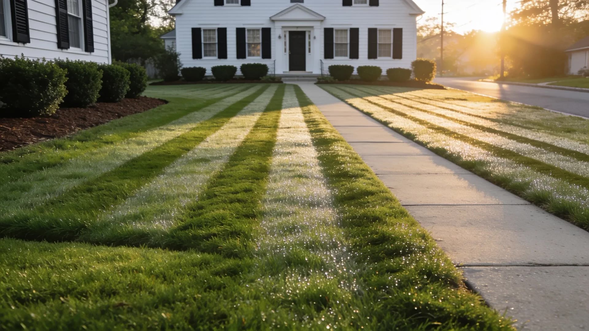

Vilas Studio
Vilas Studio
$300 + $50/mo
$500 + $80/mo

Lawn care · Nassau County
Your lawn,
handled.
handled.
Get a free quote
SCROLL ↓
One lawn care website.
Two prices.
Two prices.
Basic · $300 + $50/mo
A still hero,
done well.
done well.
Premium · $500 + $80/mo
The hero moves.
Premium
Scroll, and the sun rises over a freshly cut lawn.
Vilas Studio
vilas.studio
A website that looks expensive.
It wasn't.
Basic — $300 + $50/month
Premium — $500 + $80/month
Custom — let's talk
Premium — $500 + $80/month
Custom — let's talk